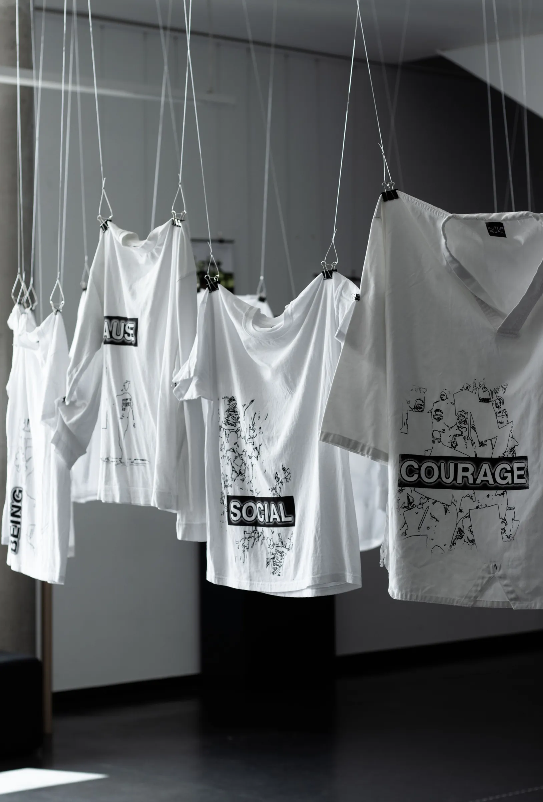
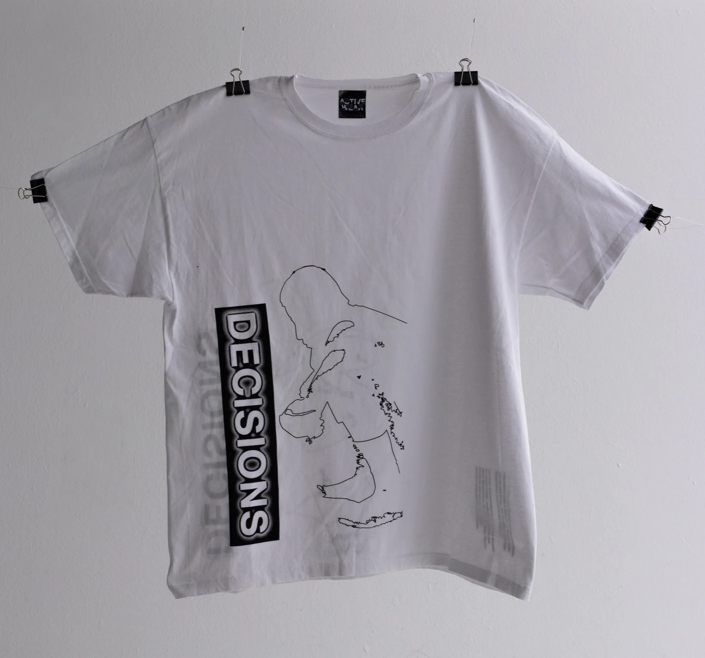
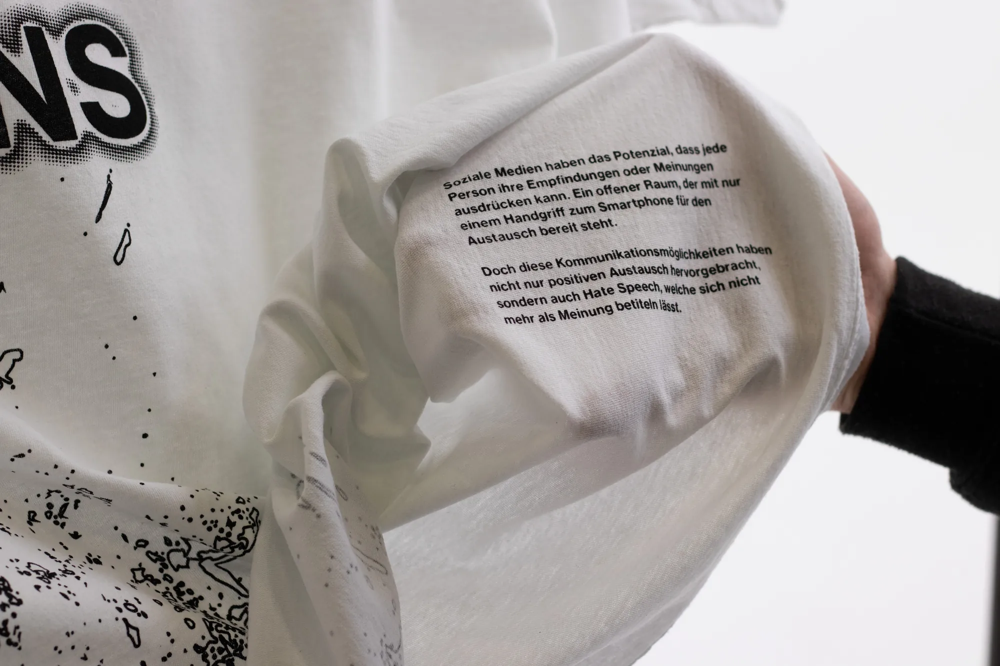
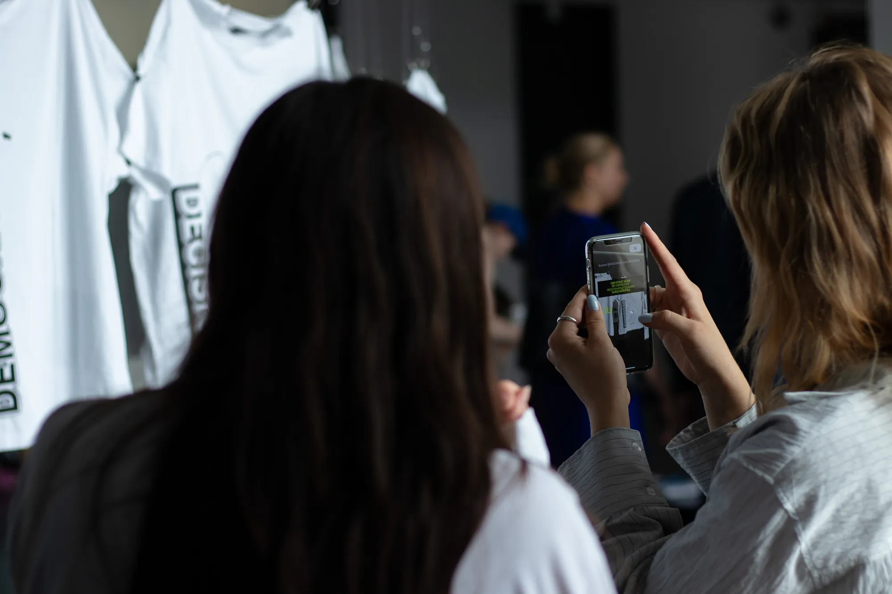
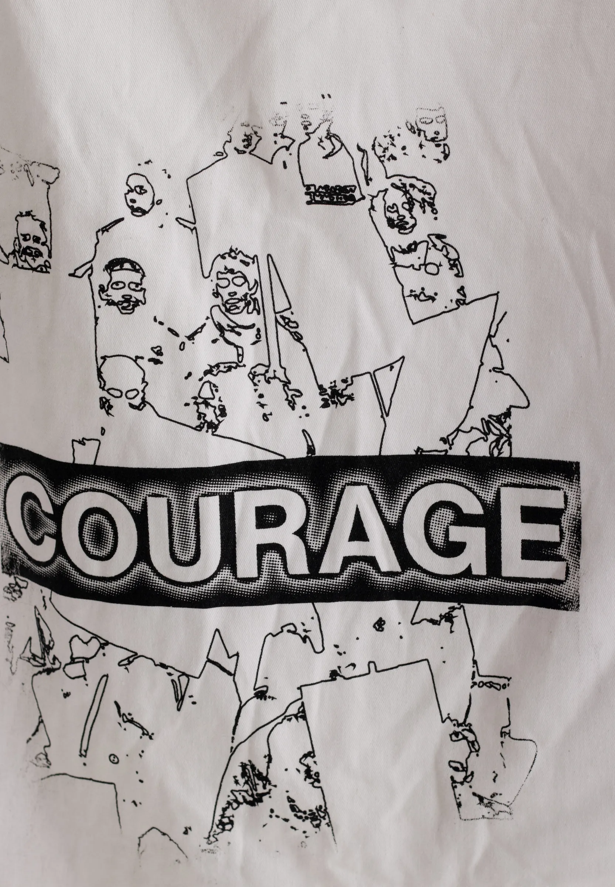
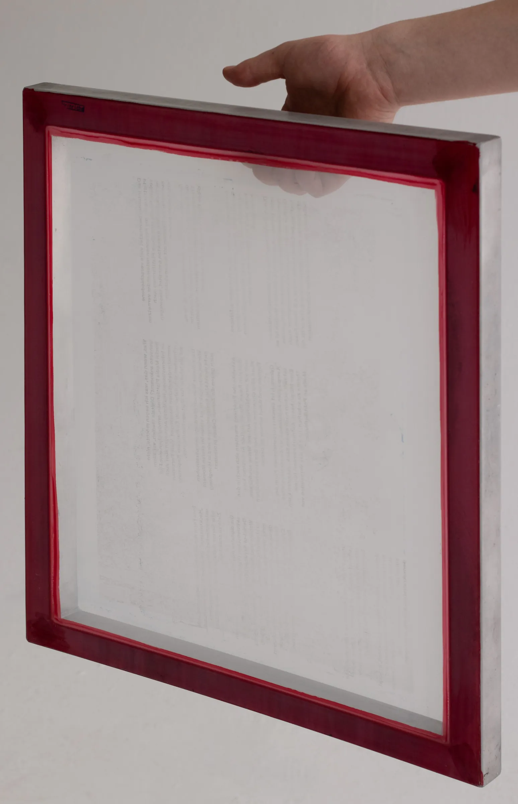

Active Wear
An installation of twenty shirts that explores digital activism and the emotions behind it.
- Year
- 2023
- Context
- Bachelor's project, supervised by Prof. Erich Schöls
- Team
- solo project
- Role
- concept, screen printing, AR development
- Tools
- Unity (C#, AR Foundation, ARKit), screen printing, graphic design

01 / Aim
Active Wear is an installative examination of digital activism and the emotionality behind it. The aim is to give access to activist practices and to encourage participation.

02 / Twenty shirts
For activist actions to succeed, many different people have to come together. Here they are represented by twenty second-hand shirts, each with its own screen print and a title for an aspect of activism that matters for democracy. The prints derive from activist or physical photographs and carry a short text on the inside. As in social movements, some shirts are passive and analogue, others proactively call for interaction: scanned with a smartphone they open augmented-reality experiences that question, provoke or invite action.




03 / Two layers
The shirts are deliberately monochrome, while the digital layer uses the strong colors of activist visual language. One typeface connects both. The title plays with "activewear", sportswear turned into a vehicle for civic engagement.


04 / Exhibitions & links
Exhibitions & presentations
- Bergwerk exhibition, Würzburg, July 2023